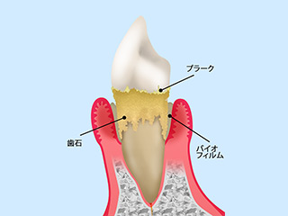
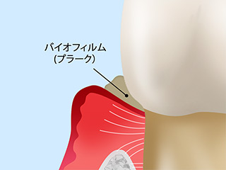
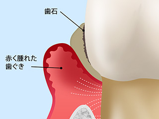
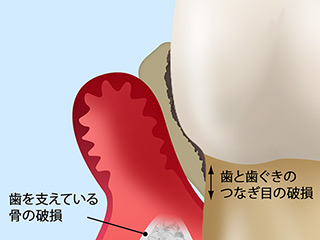
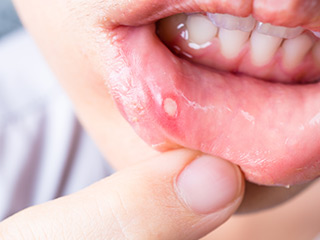
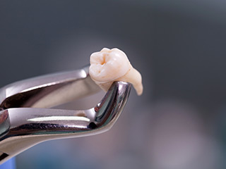
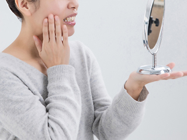

Periodonta一般歯科｜歯周病治療・口内炎・口腔外科・顎関節症お口まわりのお悩みは何でもご相談ください
渋谷駅すぐの歯医者「渋谷ルーブル歯科・矯正歯科」では、矯正治療を中心に、一般歯科をはじめ歯科全般に対応します。歯ぐきの病気の歯周病、痛い口内炎、お口まわりの外科処置をおこなう口腔外科、顎の関節のお悩みなど何でもお気軽にご相談ください。
歯を失うことにつながる病気です～歯周病～
歯周病は高齢者がかかる病気のイメージがあるかもしれません。しかし日本の成人の約8割がすでに歯周病の予備群か、すでに発症しているといわれています。ごく初期段階では自覚症状があらわれないため、静かに進行してしまうのが、その原因の一つです。
歯周病とは

歯周病菌の作用で、歯を支える歯ぐきや顎の骨が破壊されていく病気です。「歯ぐきの腫れ」や「歯ぐきからの出血」「強い口臭」などに気づいたときにはすでに進行しています。治療せずに放っておくと顎の骨が溶けていき、支えを失った歯が抜け落ちてしまうことにもつながるのです。
歯周病セルフチェック
一つでも当てはまる方は歯周病のリスクがあります。お早めに当院にご相談ください。
- 歯ぐきが腫れている
- ブラッシングの際に歯ぐきから出血する
- 朝起きたときに口の中がネバつく
- 口臭がきつくなってきた
- 歯が浮く感じがする
- 歯がグラグラする
- 歯がしみる
- 歯ぐきから膿が出る
- 歯ぐきが下がって歯が長くなったように見える
歯周病の進行段階とおもな治療法
※表は左右にスクロールして確認することができます。
| 進行段階 | 症状 | おもな処置・治療 |
|---|---|---|
|
歯肉炎・軽度歯周炎  |
歯ぐきが軽い炎症を起こした状態です。ブラッシングの際に出血することがあります。 |
【ブラッシング指導】 【スケーリング】 |
|
中等度歯周炎  |
歯を支える顎の骨が溶けはじめた状態です。歯が浮くような感覚があります。口臭も強くなっていきます。 |
【ルートプレーニング】 【歯周ポケットそうは術】 |
|
重度歯周炎  |
顎の骨のほとんどが溶けてしまい、歯が大きくグラつきます。歯ぐきから膿や血が出て、口臭がかなりきつくなります。 |
【フラップ手術】 |
お口の中にできものはありませんか？～口内炎～
口内炎とは

お口の中の粘膜に起こる炎症を口内炎といいます。唇や舌、頬の内側や歯肉などに発症し、細菌性、ウイルス性、アフタ性、アレルギー性などさまざまな種類があります。
口内炎の原因
口内炎の原因はなかなかはっきりしませんが、お口の中だけでなく全身疾患や健康状態も影響することがあります。
- お口の中を傷つけたり、火傷したりすると口内炎を起こすことがあります
- ブラッシングができず、お口の中が不衛生だと、口内炎になりやすいので注意が必要です
- 全身の免疫力が低下すると口内炎を起こしやすくなります
口内炎の治療
口内炎のほとんどは1～2週間で自然に治ります。痛みが強く治療する場合には、患部にステロイド軟こうを塗ったり、保護シールを貼ったりします。長い期間腫れが引かない場合、強い痛みがある場合は、口腔外科治療を専門におこなう歯科医師の診察を受けましょう
お口まわりの外科処置をおこないます～口腔外科～

口腔外科という言葉は、あまり聞き慣れないかもしれません。口腔外科は、お口まわりの外科処置をおこなう診療科目です。たとえば親知らずの抜歯や歯ぐきの切開、口内炎の治療などで外科処置をともなうものがすべて含まれます。またインプラント治療などの高度な技術が必要な治療も含まれます。
口腔外科は歯科医師なら誰でもおこなえますが、病状によっては専門的な知識と技術が求められるため口腔外科を専門的におこなっている歯科医師も存在します。渋谷駅すぐの歯医者「渋谷ルーブル歯科・矯正歯科」では、口腔外科を専門にしている歯科医師が中心に治療しますので安心です。
ご存知ですか？ 顎関節症
放置すると全身へ悪影響を及ぼすこともある顎関節症。むし歯とは異なる原因で顎が痛む場合や、顎に違和感がある場合は顎関節症かもしれません。
顎関節症の見分けポイント
- 口を開けづらい、大きく開けられない
- 口を開けると「カクカク」、「ジャリジャリ」という音がする
- 耳の前あたりが痛む
- 顎をうまく動かせない、食事が億劫になった
このような症状に気づいたら、当院へお気軽にご相談ください。
顎関節症の原因 （構造的弱さ、咬合不良、精神的要因、外傷、行動）

顎関節症の原因は、さまざまな要因が組み合わさって起きるとされています。顎の関節や筋肉など、身体的な構造の弱さのほかに次のような原因が考えられます。
噛み合わせの乱れ
咀嚼は歯や顎の大きな役割の一つですが、噛み合わせのバランスが乱れていると、顎の関節に余計な負荷がかかります。
食いしばり・噛み締め
日頃のクセやストレスから筋肉が過度に緊張した状態は、噛み締めや食いしばりを起こし、顎関節の負担となることがあります。
姿勢やクセによる負担
悪い姿勢が噛み合わせを悪くするケースもあります。頬杖をついたり、片側のみで食べ物を噛んだりする癖はありませんか？ 実はこうした習慣も顎関節症の原因になります。
外傷
事故などで顎や骨に強い衝撃が加わると、たとえ瞬間的な力であっても噛み合わせや歯列の乱れにつながることがあります。
その他の疾患
関節炎や自律神経失調症、アレルギー、リウマチなどでも引き起こされているケースがあります。
日々のこんな生活習慣にも注意が必要
また、顎関節症はこれらの原因一つだけで起きるものではありません。顎の痛みや違和感の原因となる、次のような生活習慣はありませんか？
＜睡眠時＞
高すぎるなど、自分に合わない枕を使っている
横向きに寝ている
＜起床時＞
デスクワークなどで長時間悪い姿勢で座っている
頬杖をつくクセがある
原因となる生活習慣を改善することで、症状が緩和することもあります。
顎関節症の治療法
顎関節症の治療においても、患者様一人ひとりの症状にあったアプローチをすることが重要です。渋谷ルーブル歯科・矯正歯科では、他の治療と同様に検査やカウンセリングを大切にしています。患者様が困っている問題を解決するために、検査結果やカウンセリング内容をもとに、患者様のお口の状態やライフスタイルに最適な治療法をご提案いたします。
当院で行う顎関節症の治療法は、次のようなものがあります。顎関節症の原因を改善するためにいくつかの方法を組み合わせて治療を行います。顎の痛みや違和感がありましたら、当院へお気軽にご相談ください。
ソフトスプリント
歯ぎしりや食いしばりを抑えるためにマウスピースを使用する方法です
運動療法
緊張している顎周辺の筋肉をストレッチなどによってほぐしたり、口を開けられる量を増やしたりします
マニピュレーション法
直接触れることによって顎関節の関節円板のズレを修正します
咬合誘導
噛み合わせを改善するために、マウスピースなどで少し調整します
仮歯
仮の歯で噛み合わせを試して、補綴（ほてつ）治療を行う準備をします
補綴（ほてつ）治療
噛み合わせの調整を行うために補綴物で高さを出したり、歯を削ったりします
矯正治療
噛み合わせを改善するために部分矯正なども組み合わせて行います
口や歯で気になることがありましたら、当院へお気軽にご相談ください。
一般歯科